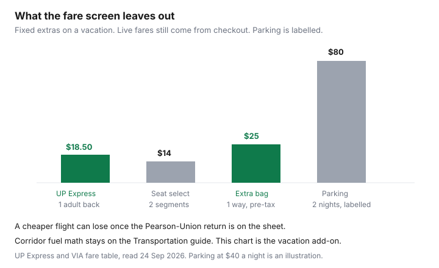

Travel · Canada
VIA Rail for Leisure Trips in Canada: When the Train Beats Flying or Driving
A leisure ticket is not a Tuesday commute. Households compare a VIA fare with a flight fare, see a higher number on the train, and drive. The flight quote left out the ride to the airport, the bag, and the hour you will not get back. The drive quote left out parking at the destination and the fatigue of arriving already tired. This page is the vacation version of that comparison: weekends and scenic trips, not the office corridor.
Fare rules below were read from VIA Rail’s fare-comparison and classes pages on 24 Sep 2026. Dollar fares move every day. The rules and the add-on fees are what you can plan around. There is no natural affiliate product in a train-versus-flight decision. Saving Optimizer does not claim a VIA Rail partnership. Education only.
Disclosure: No booking partnership is claimed. Seat-selection and baggage figures are VIA’s published fare-table amounts as read 24 Sep 2026. Live fares belong to the checkout you open that week.
Key takeaways
- Use this page for vacation trips: a Québec City weekend, a Kingston overnight, the Ocean, or the Canadian. The fuel-versus-Escape commute sheet lives under Transportation. Do not rebuild it here.
- Corridor Escape (online only) is non-exchangeable and non-refundable. Economy Plus and Business Plus are the flexible products: no service charge to exchange, fare difference only, and fully refundable before departure. Economy and Business sit in between; read the percentage on the live table before you rely on it.
- Escape seat selection in the corridor is $7 per segment. An extra large carry-on is $25 plus tax per direction on Escape, $20 on Economy, $15 on Economy Plus. A return is two directions.
- A flight that looks cheaper still owes an airport transfer. One adult, Pearson to Union and back, is $9.25 each way with PRESTO ($18.50 return) or $12.35 each way at the standard fare. Children 12 and under ride free on UP Express.
- On long-distance trains, a Sleeper Plus night includes meals (except Winnipeg–Churchill, where meals are for purchase) and a bed. Compare the sleeper premium with a hotel night plus dinner, not with an economy seat alone.
- Book an accessible space when you book the ticket. Winter plans need a VIA advisory check and a connection buffer. This page does not invent an on-time percentage.
Leisure corridors where VIA competes: Québec–Windsor tourism hops and longer scenic routes
The Québec City–Windsor corridor is where most Canadians meet VIA. For a vacation, the useful hops are the ones that put you downtown on both ends: Montréal to Québec City, Toronto to Kingston or Ottawa, Ottawa to Montréal, Toronto to Niagara-area stations when the timetable matches the plan. You are not trying to make a 9 a.m. meeting. You are trying to arrive somewhere you will walk, eat, and sleep.
That is a different product from the Tuesday Toronto–Ottawa commute, which already has its own cost sheet. A leisure hop can be a Friday afternoon out and a Sunday evening back. The train station is often the neighbourhood you wanted. The airport is a second trip after the first one ends.
Longer scenic routes are a different purchase again. The Canadian (Toronto–Vancouver) and the Ocean (Montréal–Halifax) are overnight or multi-day trips. Winnipeg–Churchill is a regional route with its own meal rule. On those trains the question is not “is this cheaper than a 90-minute flight?” It is “does this night on the train replace a hotel, and is the point of the trip the route itself?” If the point is only to be in Vancouver by dinner, fly or do the arithmetic in the next sections and be honest about which one you wanted.
Corridor tourism still has a timetable. A pretty arrival at 11 p.m. into a city whose last useful connection has gone is not a saving. Read the arrival before you fall in love with the fare.
Escape fare and advance-purchase windows vs flexible fares
VIA does not publish a single “book 21 days ahead” leisure rule on the fare table read 24 Sep 2026. Escape behaves like an advance-purchase airline fare anyway: it is the rigid cheap bucket, sold online only, and it disappears when that inventory is gone. Buy it when the weekend is fixed. If the weekend might move, you are shopping a different column.
| Corridor fare | Change or cancel before departure | Add-ons that show up on a vacation |
|---|---|---|
| Escape (online only) | Non-exchangeable. Non-refundable. | Seat selection $7 per segment. Extra large carry-on $25 plus tax per direction, space limited. |
| Economy | Exchangeable with a service fee (a share of the fare or at least $20 per segment) plus any fare difference. Partially refundable. Read the live percentage. | Seat selection included on the table. Extra large carry-on $20 plus tax per direction. |
| Economy Plus | Exchangeable with no service charge; fare difference only. Fully refundable before departure. | Seat selection included. Extra large carry-on $15 plus tax per direction. 150% VIA Préférence points. |
| Business | Exchangeable with a service fee plus any fare difference. Partially refundable. Read the live percentage. | Preferred seat $10 per segment if you want it. Extra large carry-on included. Meals and lounge are the reason to open this column; confirm the icons at checkout. |
| Business Plus | Exchangeable with no service charge; fare difference only. Fully refundable before departure. | Standard and preferred seats included. Extra carry-on included. |
A return corridor trip is two segments for seat selection and two directions for a bag. Escape seat selection both ways is 2 × $7 = $14 before tax, if tax applies at checkout. An extra bag both ways on Escape is 2 × $25 = $50 plus tax. Those two lines are why a “cheap Escape” and the fare you actually pay are not the same number. The corridor checked-baggage row on the fare table was blank on 24 Sep 2026. Do not copy the long-distance extra-checked-bag fee onto a Toronto–Ottawa weekend. Price a checked bag in the checkout.
Treat Escape the way you treat a non-changeable flight. If the only risk is a dinner reservation, Escape is the point of the column. If a child’s game, a storm, or a parent’s appointment can move the weekend, Economy Plus or Business Plus is the fare that still has a refund. Paying the flexible fare on purpose is cheaper than eating a non-refundable Escape you cannot take.
All-in math vs flying (bags, airport transfers) and vs driving (fuel, parking, fatigue)
Write three lines, not one. The flight line is the fare, plus a bag if the brand does not include it, plus the ride to and from the airport on each end, plus the time from your door to the downtown you actually wanted. The train line is the fare, plus seat selection if you are on Escape and care where you sit, plus an extra bag if you are not travelling with one medium carry-on, plus a local transit hop if the station is not the hotel. The drive line is fuel and wear from the Transportation sheet, plus parking at the destination, plus how you feel when you arrive.
Airport math you can stamp. UP Express, Pearson to Union, as published on the airport and UP Express fare pages read 24 Sep 2026: adult standard $12.35 one way, $24.70 return; PRESTO adult $9.25 one way. Children 12 and under are free. A solo PRESTO return is $18.50. Two adults on PRESTO are $37 return. That is only the Toronto end. Ottawa, Québec, or Halifax still has its own ground leg. Bag fees on the airline are the other guide: checked bags on Air Canada and WestJet. A Basic fare that removes the carry-on can erase the “cheap flight” before you reach the station comparison. When that brand is the wrong buy is Basic versus Standard.

Driving fuel for the Québec–Windsor corridor is already worked on the Transportation page linked below. Do not paste a second cents-per-litre model here. What that page does not price is the vacation: two nights of downtown parking, a hotel you chose because the car had to sleep somewhere, and the fact that the driver does not arrive rested. A labelled stall at $40 a night for two nights is $80 before the fuel. If the hotel includes parking, put $0 on that line and say so. If it does not, the train’s “higher fare” is often the parking line in disguise.
Fatigue is not a slogan. A Friday flight plus security plus a transfer can land you at the restaurant with nothing left. A Friday train from downtown to downtown can be the evening. Price that only if you would have spent money repairing it — a taxi because nobody wanted to walk, a worse hotel because you arrived late, a Saturday morning you slept through. If you would not have spent it, leave the line at zero. Do not invent a dollar value for “relaxing.”
Cabin vs economy overnight: when the sleeper replaces a hotel night
On long-distance trains the economy seat is a seat. Sleeper Plus is a bed, bedding, access to a shower, and meals in the dining car. VIA’s classes page describes private cabins and semi-private upper and lower berths as the hotel-like product. The fare table’s own footnote, read 24 Sep 2026: Winnipeg–Churchill has no meal service in Sleeper Plus. Take-out meals are for purchase. Do not budget “meals included” on that route.
Sleeper Plus discounted fare: exchangeable for 10% of the fare or a minimum of $50 per segment, plus any fare difference; partially refundable on the same 10% or $50 minimum. Sleeper Plus regular fare: exchangeable with no service charge plus any fare difference, and fully refundable before departure. Prestige is a separate cabin product: non-refundable inside 90 days of departure, fully refundable with no service fee when you cancel more than 90 days out, with its own exchange limits. Escape on long-distance trains is still non-exchangeable and non-refundable. Checked bags: one large item in economy, two in Sleeper Plus. An extra checked bag in economy is $40 plus tax per direction. Sleeper Plus shows no additional-checked-bag fee on that row.
The decision is the premium, not the sticker. Take the sleeper fare and subtract the economy-seat fare for the same departure. That difference is the price of the night and the meals. Compare it with a hotel night after tax, from the all-in lodging sheet, plus the dinner you would have bought in that city. If the premium is under the hotel plus dinner, the cabin is the cheaper night and you wake up further along the route. If the premium is a second hotel on top of a fare you could have flown, you are buying the trip itself. That is allowed. Call it the trip, not a saving.
A berth is not a cabin. A household that needs a door, or that will not sleep in an open section, should price the private room. A couple sharing one cabin divides the premium by two. Two roomettes do not. Read the accommodation name on the checkout before you divide anything.
Accessibility, winter reliability, and connection planning
Accessible travel is a column on VIA’s fare table, which means the space has to be requested, not assumed. Book the wheelchair space or the assistance you need in the same session as the ticket, and confirm the stations on your trip have the boarding method you use. A fare that is cheap and a station you cannot board is not a completed plan. VIA’s accessible-travel pages are the source for the equipment. This guide will not guess which platforms have a lift.
Winter reliability is a planning habit, not a statistic this page invents. Before a January weekend, read VIA’s service alerts for that train, and read the highway report if the alternative is to drive. Build a buffer on any connection: a tight transfer to a dinner reservation, a cruise, or a flight the same evening is how a small delay becomes a hotel you did not want. If the connection is a flight, the airline’s clock and the refund rules are the airline’s, not VIA’s. A train delay does not automatically become an airline refund.
Corridor Wi-Fi and at-seat power are part of why a leisure afternoon on the train can replace an evening of driving. They are not a promise that every car on every scenic route works the same way. The classes page limits Wi-Fi to the corridor and the Ocean. Pack the offline copy of the reservation if the point of the trip is the mountains, not the inbox.
Cross-link only: short-haul commute cost lives under Transportation—this is vacation framing
Fuel, parking at the office end, wear, and solo-versus-family commute math for the Québec–Windsor corridor are already published. Use them. Do not redo them on a vacation page.
- Via versus driving the corridor — the commute cost sheet.
- Flight versus train versus drive on short haul — the mode choice when the destination is a meeting, not a weekend.
If your trip is a Friday-to-Sunday stay, stay on this page and add the hotel night, the dinner, and the airport transfer. If your trip is a return the same day for work, you are on the wrong guide.
Sources & date stamps
- VIA Rail, fares and conditions (corridor and long-distance tables) — Escape non-exchangeable and non-refundable; Economy Plus and Business Plus fully refundable and exchangeable without a service charge; Escape seat selection $7 per segment; extra carry-on $25 / $20 / $15 plus tax per direction; Sleeper Plus discounted exchange and refund at 10% or $50 minimum; Sleeper Plus regular fully refundable; Winnipeg–Churchill meal exception. Read 24 Sep 2026.
- VIA Rail, classes and services — Sleeper Plus described as cabins or berths with meals, shower access, and bedding; Wi-Fi named for the corridor and the Ocean. Read 24 Sep 2026.
- UP Express fare table and Toronto Pearson UP Express page — adult standard $12.35 one way, PRESTO adult $9.25, children 12 and under free. Read 24 Sep 2026.
Frequently asked questions
Is Escape the right VIA fare for a weekend trip?
Only when the dates will not move. On the corridor table read 24 Sep 2026, Escape is online only, non-exchangeable, and non-refundable. Economy Plus and Business Plus are fully refundable before departure and exchangeable for the fare difference alone. Seat selection on Escape is $7 per segment.
Does a cheaper flight still win after the airport ride?
Add the transfer before you decide. One adult on UP Express with PRESTO is $9.25 each way between Pearson and Union, $18.50 return. The standard adult fare is $12.35 each way. Children 12 and under ride free. The other airport still has its own ground cost, and a checked bag is a separate line.
When does a sleeper replace a hotel?
When the gap between the Sleeper Plus fare and the economy seat is less than a hotel night after tax plus the dinner the sleeper includes. Meals are not included on Winnipeg–Churchill. Discounted Sleeper Plus charges 10% or at least $50 per segment to change or refund. Regular Sleeper Plus is fully refundable before departure.
Where is the Toronto–Ottawa commute math?
Under Transportation, in the Via versus driving corridor guide and the short-haul flight versus train versus drive guide. This page does not rebuild fuel and wear. It adds the vacation lines: a hotel night, destination parking, and the airport transfer.